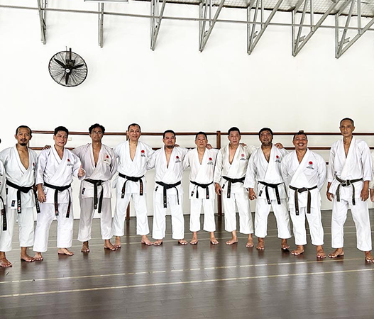

Welcome To
 Training
Training
Indonesia Japan Karate Association
Training

Training

JKA Karate, where tradition, discipline, and excellence come together.
Rooted in authentic Shotokan Karate, JKA Karate preserves the original teachings and spirit passed down from Gichin Funakoshi, the founder of modern karate. Through rigorous training and precise technique, we strive to develop not only physical strength, but also character, humility, and respect.
Japan Karate Association Indonesia (JKAI) is the official JKA organization in Indonesia, led by Chairman Suyana Sensei.
JKAI is a certified branch of the Japan Karate Association (JKA) Japan, ensuring that all training, grading, and technical standards strictly follow JKA headquarters. As an officially recognized branch, JKAI is authorized to conduct JKA DAN Examinations, allowing practitioners in Indonesia to obtain internationally recognized JKA black belt certifications.
JKAI is also open to affiliation opportunities with karate dojos across Indonesia that share the same commitment to authentic Shotokan Karate and traditional JKA values. Through affiliation, dojos gain access to standardized instruction, technical guidance, and the global JKA network.
Whether you are an individual practitioner or a dojo seeking official recognition, JKAI welcomes you to grow together within the spirit of true JKA Karate.
You can visit our Dojo at the location on your convenience to practice.
You can check other JKA Indonesia dojo location. Feel free to contact us first if you have any questions.
Other Dojos Location